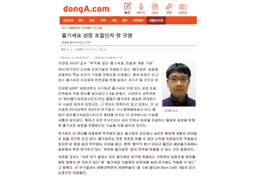
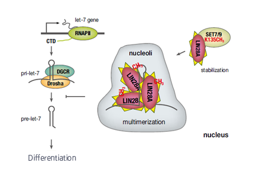

Report by Subjects
Report by Subjects
KAIST RESEARCH ACHIEVEMENTS
SET7/9 methylation of the pluripotency factor LIN28A
is a nucleolar localization mechanism that blocks let-7 biogenesis in human ESCs
Department of Biological Sciences Daeyoup LeeㆍYong-Mahn Han
Summary
The follow-up study of import of methylated LIN28A into nucleolus and the involvement of maturation of let-7 miRNA is in progress. The followup study to distinguishing the role of SET7/9, which are histone monomethylase, in methylation of either histone or non-histone substrates is in progress. The follow-up study to maximize the efficiency of induced pluripotent stem cells by means of novel methodology for application in various clinical purposes such as stem cell therapy and cancer therapy is in progress.
R&D Report
LIN28, which is a major factor in induced pluripotent stem cells, plays important roles in self-renewal of stems cells, pluripotency and controlling differentiation and development. It also controls the expression of c-Myc gene, which is decisive in controlling the cell growth, and regulates cancer cells. By controlling the maturation of let-7 miRNA, which is a major LIN28 miRNA, the protein was thought to control cell growth, but this was not proved with epigenetic molecular regulatory mechanisms. Therefore this study has significance in elucidating the epigenetic molecular mechanism of let-7 miRNA maturation regulation by LIN28 in human embryonic stem cells and in wide application including not only embryonic stem cells but also in iPSC and cancer therapy on clinical level.
LIN28-mediated processing of the microRNA(miRNA) let-7 has emerged as a multilevel program that controls self-renewal in embryonic stem cells. LIN28A is believed to act primarily in the cytoplasm together with TUT4/7 to prevent final maturation of let- 7 by Dicer, whereas LIN28B has been suggested to preferentially act on nuclear processing of let-7. Here, we find that SET7/9 monomethylation in a putative nucleolar localization region of LIN28A increases its nuclear retention and protein stability. In the nucleoli of human embryonic stem cells, methylated LIN28A sequesters pri-let-7 and blocks its processing independently of TUT4/7. These findings provide insight into the molecular mechanism underlying the posttranslational methylation of nuclear LIN28A and its ability to modulate pluripotency by repressing let-7 miRNA expression in human embryonic stem cells.


Fig 2. It is expected to provide much insight into understanding the characteristics of stem cells in terms of pluripotency regulation of
embryonic stem cells by LIN28A. LIN28A is involved not only in embryonic stem cells but also deeply in iPSC and therefore has high probability of application. Novel methodology can be proposed for increasing the
efficiency of induced pluripotent stem cells upon the results of the study
and there is probability as the new target for anticancer substance.
Research results
ㆍCell Stem Cell: introduced as representative paper and took the place as cover paper
ㆍ8 media coverages(including Donga Ilbo)
ㆍIt is possible to be applied as platform technology for the development of suppressor for suppression and growth of cancer cells. Technology transfer with Millipore Corporation, a multinational corporation, is in progress
Reference material
ㆍSeung-Kyoon Kim#, Hosuk Lee#, Kyumin Han, Sang Cheol Kim, Yoonjung Choi, Sang-Wook Park1, Geunu Bak, Younghoon Lee, Jung Kyoon Choi, Tae-Kyung Kim, Yong-Mahn Han, and Daeyoup Lee*(2014) SET7/9 methylation of the pluripotency factor LIN28A is a nucleolar localization mechanism that blocks let-7 biogenesis in human ESCs. Cell Stem Cell 15, 735-749.
Research finance
ㆍThis work was supported by grants from the Stem Cell Research Program , the Basic Science Research Program, the KAIST Future Systems Healthcare Project, and the Intelligent Synthetic Biology Center of Global Frontier Project funded by the Ministry of Science, ICT and Future Planning.